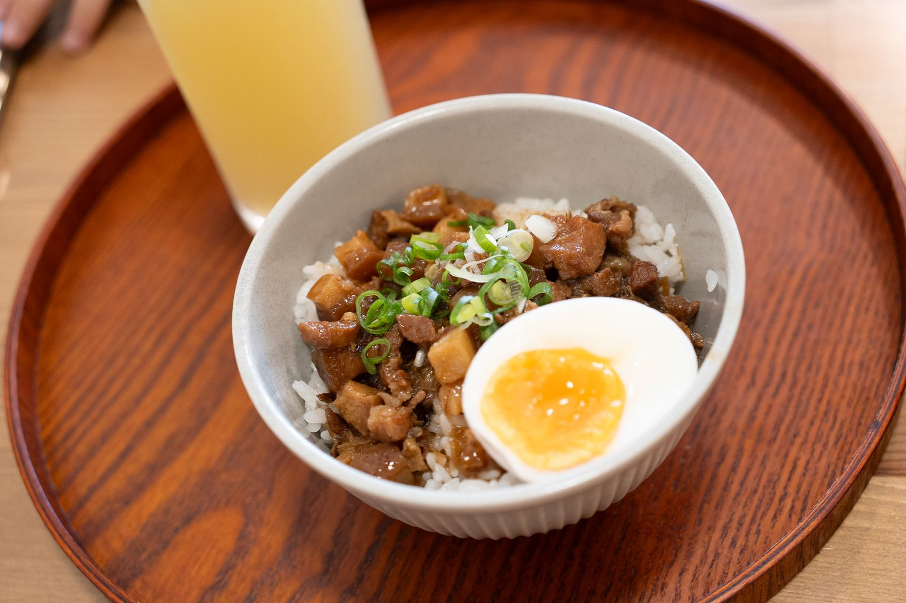
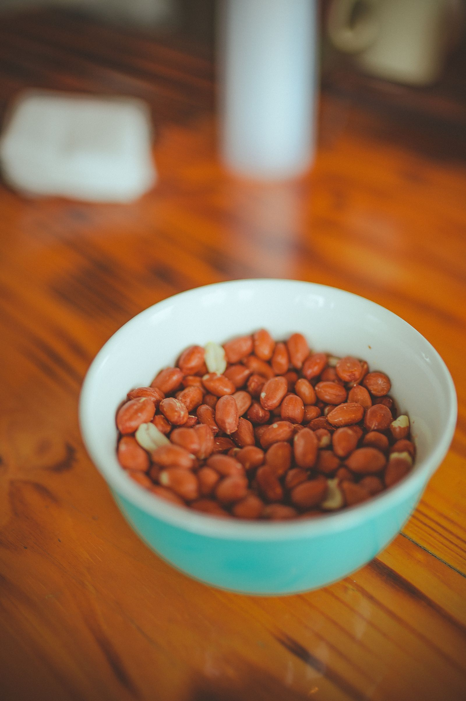

대만 메뉴판 중국어, 土豆가 감자가 아니라 땅콩이라고?
중국어를 조금 배웠어도 대만 메뉴판에서 헷갈리는 단어가 있어요 — 같은 한자, 다른 뜻부터 알아두세요.
게시
"土豆면 감자 아닌가요?" 대만 메뉴판 중국어는 중국 대륙에서 쓰는 말과 다른 단어가 꽤 있어요. 대만에서 土豆는 땅콩이고, 감자는 馬鈴薯라고 써요. 대만 교육부 『國語辭典簡編本』의 '양안 상용 어휘 대조표'와 『臺灣台語常用詞辭典』을 바탕으로 식당에서 자주 보는 단어를 정리해봤어요.
01 · 대만 메뉴판 중국어, 헷갈리는 단어 한눈에 보기
| 뜻 | 대만 메뉴 | 대륙에서 흔한 말 |
|---|---|---|
| 땅콩 | 土豆·花生 | 花生·落花生 |
| 감자 | 馬鈴薯 | 洋芋·土豆 |
| 감자칩 | 洋芋片 | 薯片·土豆片 |
| 파인애플 | 鳳梨 | 菠蘿 |
| 키위 | 奇異果 | 獼猴桃 |
| 아보카도 | 酪梨 | 鱷梨 |
| 양배추 | 高麗菜 | 包心菜·圓白菜 등 |
| 무 | 菜頭 | 蘿蔔 |
| 브로콜리 | 綠色花椰菜 | 西蘭花 |
02 · 고기·생선·유제품 단어
생선 참치는 鮪魚(대륙 金槍魚·吞拿魚), 연어는 鮭魚(대륙 三文魚), 틸라피아는 吳郭魚(대륙 羅非魚)예요.
유제품 마시는 요구르트는 優酪乳(대륙 酸奶), 떠먹는 요구르트는 優格, 치즈는 起司(대륙 乳酪·芝士)라고 써요.
그 밖에 베이컨은 培根(대륙 煙肉), 도시락은 便當(대륙 盒飯), 일본식 계란찜은 茶碗蒸(대륙 蛋羹)이에요.

03 · 굴은 蚵仔, 무는 菜頭
대만 메뉴에서 자주 보이는 蚵仔는 굴이에요. 대만어로 '오아(ô-á)'라고 읽고, 교육부 대만어 사전도 牡蠣(굴)로 풀이해요. 야시장 대표 메뉴 蚵仔煎이 바로 굴전이에요. 菜頭는 무를 가리켜서 菜頭粿는 무떡이에요. 豆花는 대만에서 그대로 豆花, 대륙에서는 豆腐腦·豆腐花라고도 불러요.

04 · 메뉴판 볼 때 기억할 점
대조표는 대표적인 쓰임이에요 대만에서도 番茄·蕃茄를 함께 쓰는 것처럼, 가게와 세대에 따라 표현이 섞여 있어요.
土豆가 보이면 한 번 더 확인 감자를 기대했다면 메뉴 사진을 보거나 직원에게 가리켜 물어보세요.
번체로 찾기 대만 메뉴판은 번체자로 적혀 있으니 번역 앱도 번체 중국어로 맞춰두면 편해요.
"같은 한자라도 대만에서는 뜻이 다를 수 있어요." — 대만과 대륙의 음식 단어 차이를 정리한 여행자 글을 요약했습니다.
단어를 익혔다면 직접 주문해볼 차례예요. 타이베이 맛집 지도에서 동선을 짜고, 타이베이 대만식 맛집 중 여행자들이 루러우판과 무떡, 굴전을 맛있게 먹었다고 남긴 天天利美食坊에서 메뉴판을 펼쳐보세요.
지도에서 타이베이 대만식 맛집을 찾아보세요
루러우판·굴전 같은 대만 음식을 먹기 좋은 타이베이 식당을 지도에서 확인해보세요.